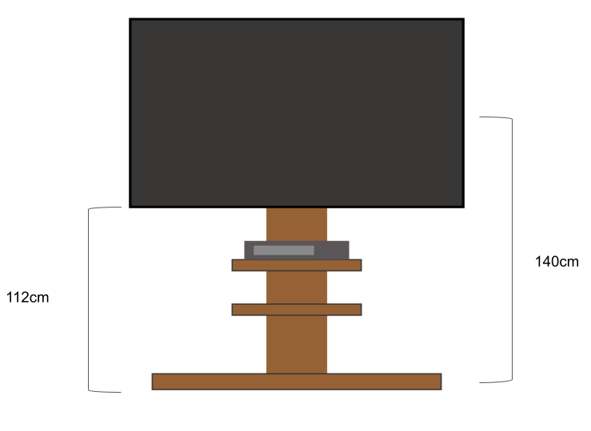
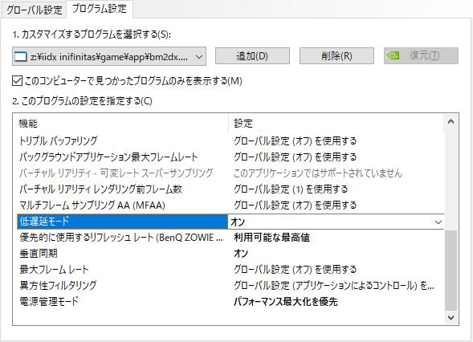

📑 文章目录（21 节）
本文将按照街机筐体（LIGHTNING MODEL）尺寸、必备器材、静音与防音改造以及系统设置的顺序，汇总搭建 beatmania IIDX INFINITAS 站姿游玩环境（宅家 IIDX）所需的全部信息。
笔者本人也在家中搭建了站姿环境游玩 INFINITAS。显示器使用的是东芝 REGZA 43Z570K（43 英寸），手台支架使用的是金属置物架，音频则是通过声卡（音频接口）输出到头戴式耳机。
- 地面至键面的高度：约 90cm（扣除鞋底厚度，在家建议 87〜88cm）
- 判定线的高度：约 131.5cm（在家建议约 130cm）
- 显示器：43 英寸・120Hz（在家选用 120Hz 高刷液晶电视性价比较高）
- 显示器至手台前端的距离：约 60cm
打算从零入坑 INFINITAS 的玩家，可以先阅读下面这篇入门方式与费用详解。
至少要了解的各项尺寸
LIGHTNING MODEL 的各项尺寸参考了 Mameshiba 工坊（マメシバ工房）曾公开的实测文章（因原网站目前已无法访问，故移除了链接）。
地面至键面的高度：90cm
LIGHTNING MODEL 从站台（踏板）到键面的高度约为 90cm。这一高度对手感影响极大，请尽量将误差控制在最小范围内。
在街机厅通常是穿着鞋子游玩的，因此在家搭建环境时扣除鞋底厚度，将高度调整至 87～88cm 左右会比较合适。
如果手台使用 PHOENIXWAN，其机身厚度约为 8cm，因此需要准备一个高约 80cm 的台子。台面纵深 30cm 即可，宽度方面 SP 有 55cm、DP 有 110cm 就足够放置。
笔者自己购买并使用了下面这款金属置物架。尺寸严丝合缝，还能通过调节脚垫微调高度，非常满意。
如果高度略微偏矮，可以在手台底部贴橡胶脚垫，或垫些板材来微调高度。
液晶显示器：43 英寸
LIGHTNING MODEL 采用的是 43 英寸 120Hz 液晶显示器。
43 英寸的 PC 液晶显示器价格偏高且选择较少，因此搭载 120Hz 倍速液晶面板的东芝 REGZA 电视非常受欢迎。
入手了 REGZA 43Z670K！能以几乎和 LIGHTNING MODEL 一模一样的环境游玩，感动哭了😭 以后在 INFINITAS 上也要多多练习💪 pic.twitter.com/GwjI6hWsky
— u*taka (@u_taka_IIDX) February 10, 2022
笔者用的也是 REGZA 43Z570K（2021 年款）。43Z570K 现已停产，如果现在选购，推荐其后续高刷液晶机型“43Z670R”，或是性价比出色的海信（Hisense）高刷机型。
这两款均支持 1080p/120Hz 输入。关于显示器的选购要点，请参考以下详细文章。
液晶显示器（判定线）的高度
LIGHTNING MODEL 的判定线距离站台（踏板）约为 131.5cm。在家搭建环境时，请扣除鞋底厚度，将判定线调整到约 130cm 的高度。
由于可以通过 LIFT（下抬高）选项进行微调，少许误差完全在可接受范围内。
至于高度调节方式，加高款靠墙电视支架是比较实惠的选择。
此外还有壁挂、金属置物架等多种方案，下文必备器材一节会详细说明。
显示器至手台前端的距离
液晶显示器面板到街机手台（PHOENIXWAN）前端边缘的距离控制在约 60cm 即可。这项数据对游玩手感的影响不算太大，稍微粗略一些也无妨。
INFINITAS 站姿环境必备器材
电脑（PC）
LIGHTNING MODEL 筐体的基础硬件配置如下。
| CPU | Intel Core i5 9400F |
| 内存 | 8GB |
| 显卡 | GeForce GTX 1650 |
| 声卡 | ASUS Xonar AE |
如果打算新购电脑，可以以上述配置作为参考标准。独立声卡并不是必需项。
关于 INFINITAS 专用 PC 的选购方法与推荐配置，以下文章有详细解析。
显示器
前面尺寸章节已经提到过，推荐选用 43 英寸 120Hz 高刷液晶电视（尤其是 REGZA）。
REGZA 的一大优势在于使用它的 IIDX（弐寺）玩家众多，上网检索就能轻松找到各类调校设置资料。如果现在购入，前面介绍的 43Z670R 或海信 43E60S 都是很不错的候选机型。
有关显示器选购的更详细内容（包括 24〜32 英寸显示器及 OLED 屏幕），请参考下面这篇文章。
电视支架 / 电视柜
如果打算把电视放在桌子或金属置物架上，台面高度需要达到 100cm 左右。普通书桌高度只有约 70cm，因此放在桌子上还得额外垫高约 30cm。
另外需要注意，尽量不要将电视台与手台架合二为一（放在同一张台子上）。搓转盘（皿）或拍键时显示器会跟着晃动，非常干扰视线。
最推荐加高款靠墙电视支架
作为站姿环境的电视支架，最推荐加高款（High Type）靠墙电视支架。它价格相对亲民，而且不太占地方。不过选购靠墙电视支架时，务必留意可调节的最大高度。
若要对齐 LIGHTNING MODEL，需将液晶屏幕下沿（边框内侧）调整到约 112cm 的高度（113.5cm 减去鞋底厚度）。为此，电视挂架安装孔的中心位置大概需要达到 140cm 左右的高度。
具体所需高度会因支架和电视型号而有所浮动。由于这直接关系到游玩手感，安装前请务必自行测量核对。

即便是标称加高款的靠墙电视支架，部分商品也可能会高度不够，购买前一定要核对清楚参数。
平价款式大概在 5,000～6,000 日元左右起售。
宜得利（NITORI）靠墙电视支架“WAT”也很适合 INFINITAS
如果想兼顾家居风格统一，宜得利（NITORI）的靠墙电视支架“WAT”加高款也非常推荐。不少玩家在 INFINITAS 站姿环境中都在用这款，网上也有实际使用评测。
- 高度可在 118〜168cm 之间以 5cm 为单位进行 11 档调节（宜得利官方标注，不含电视本身高度）
- 适配 32〜60 英寸电视，最大承重 40kg，挂 43 英寸电视绰绰有余
- 无需在墙面打孔即可摆放，租房族也能放心使用；选购带搁板版本还能顺便放置主机或游戏机
- 价格在 2 万日元出头（截至 2026 年 10 月参考价）。属于网店限定商品，库存会随时间变动
虽然比 Amazon 上的电视支架贵一些，但外观更简洁美观，作为电视架的稳固性也很好。无论选择哪一款，都请提前结合电视尺寸（挂孔中心至屏幕底部的距离）核算好，确认装上电视后判定线高度能否落在约 130cm。
用金属置物架当电视台其实意外地麻烦
43 英寸电视宽度约为 95cm，若要用金属置物架摆放，理想规格是宽 100cm 以上、高 100cm 左右，但市面上尺寸刚好合适的产品意外地少，而且价格也不算便宜。
如果允许在墙上打孔，壁挂是最实惠的方案
如果家里允许在墙面打孔，直接安装电视壁挂架大概是最省钱的方法。
笔者早年在老家搭建站姿环境时，也是采用壁挂方式安装的电视。
需要注意，如果是普通的石膏板墙面，必须先找到墙体内部的立柱（龙骨）再固定。下面这个页面说明得很清楚，打算壁挂的玩家建议提前浏览一下。
如果墙面无法打孔，也可以利用顶天立地调节配件（如 LABRICO 等）配合 2×4 木方立起承重柱来挂装电视。
手台 / 专用控制器
想在站姿环境下认真练习的话，海外生产的“PHOENIXWAN+”是当之无愧的主流选择。除此之外也有 KONAMI 官方推出的专控等产品，详情可参考下方手台汇总文章。
选配定制方面，推荐只需把微动开关升级为欧姆龙（Omron VX-01-1C23 50g）即可。按键与弹簧选配“DJ DAO 按键 + 40g 弹簧”就完全够用了。
关于“PHOENIXWAN+”的介绍与实机评测请见下文。
其他手台/专控的选购方案可参考下面这篇文章。
手台支架 / 放置台
站立游玩时，需要准备高度约 80cm 的放置台。笔者买了下面这款金属置物架，目前用起来完全挑不出毛病。
虽然选择方案有很多，但对于 DP 玩家来说，将两个收纳柜（Color Box）横放叠拼也是非常推荐的办法。
将下面这款收纳柜横置叠放两个后，高度正好是 80cm，宽度为 109cm。虽然会稍微超出一点边缘，但刚好可以并排放下两台 Phoenixwan，尺寸非常适合 DP 玩家。
音箱或头戴式耳机 / 入耳式耳机
音频方面的核心注意事项是：原则上绝对不要直接通过电视自带扬声器输出声音，那样会有明显延迟。
音箱或耳机请直接插在电脑上，或者通过外置声卡（音频接口）连接。笔者使用的是外置声卡（Behringer UMC202HD）。相比直插电脑耳机孔，不仅底噪更小，还能直接在手边旋钮调节音量，非常顺手。
当然，没必要专程为了 INFINITAS 去置办昂贵的音频设备。
就算想要平价且听感不错的外放效果，5,000 日元～2 万日元左右的 PC 音箱也完全足够了。据说 LIGHTNING MODEL 筐体用的是 ONKYO D-PS100，但那款属于无源音箱，需要另配功放。
如果想图省事方便摆放，推荐 Creative Pebble V3。它只有手掌大小，放在桌上不占空间，支持 USB 供电和 3.5mm 有线输入。虽然也带蓝牙功能，但在 INFINITAS 里蓝牙会有延迟，请务必使用有线连接。
如果对音质也有一定追求，推荐像 Edifier（漫步者）MR3 这样的监听音箱。它是内置功放的有源音箱，只要用 3.5mm 音频线插上电脑耳机口就能直接发声。同时也配备了 TRS 平衡输入接口，如果你有 UMC202HD 这类外置声卡，接在平衡口上还能获得底噪更低、更纯净的声音。声音轮廓清晰，按键音（Key 音）也很容易听清。
笔者自己多年来一直偏爱森海塞尔（Sennheiser）的开放式头戴耳机。因为是开放式设计，透气性极佳且能听清自己的敲键声，长时间佩戴也不容易累，体验非常好。
如果没有特别讲究，直接用手头现有的有线耳机也完全够玩（无线耳机延迟很大，请避开）。
静音改造与防音对策
搭建站姿环境时，一定要同步做好静音改造与防音措施。像 PHOENIXWAN 这类街机手台（アケコン）拍打按键的声音格外响亮且容易共振传声，务必采取静音对策。
手台静音改造
静音改造的方法多种多样，包括给弹簧喷涂硅油润滑剂、在按键底座贴薄橡胶垫或软木片、以及在手台腔体内填充橡皮泥/防震泥等。
具体做法已整理在下面这篇文章中，欢迎参考。
自制隔音罩（防音 BOX）
在手台四周筑起围挡隔板也能起到不错的隔音效果。Mameshiba 工坊的视频讲解得非常通俗易懂。
据说哪怕只是用纸箱把四周简单围起来，隔音效果都相当明显，很值得一试。
隔音室
终极解决方案就是购置像 雅马哈（YAMAHA）Avitecs 这样的专业隔音室。
虽然要花 100～200 万日元左右，但想要毫无顾忌地外放爆音痛快打歌，大概也就只有买专业隔音室、住偏远乡下的独栋住宅，或者租带专业隔音设计的音乐公寓这几条路了。
此外市面上也有像“Danbocchi（だんぼっち）”这样平价的简易纸板隔音室。如果是 Grande 加大号尺寸，勉强可以塞下 SP 单人站姿环境。
也有玩家巧用金属置物架等材料自行 DIY 搭建简易隔音棚。
不过包括 Danbocchi 在内，封闭空间的缺点就是极易闷热积温。某种形式的通风换气措施是必不可少的。
各项系统与画面设置
在 INFINITAS 中，不同设置会让谱面的清晰度和判定位置产生显著变化。由于不同硬件环境的最佳参数各不相同，建议多多尝试，找到最清晰、最容易出高分的组合。
Windows 与 Nvidia 设置
笔者目前的 Nvidia 3D 设置最终稳定在下图方案。

关：自动在 1～3 帧之间调节预渲染帧数。
开：将预渲染帧数限制为 1。
超高（Ultra）：在 GPU 获取并开始渲染之前即时提交帧，将渲染延迟降至最低。
体感上该项对判定的影响较小。设为“超高”时，若同时关闭垂直同步，总感觉谱面更容易出现掉帧卡顿。因此我选择了既低延迟又更稳定的“开”。
由应用程序控制：启动 INFINITAS 时，屏幕分辨率会被强制切换为 1280×720 120Hz。
最高可用：覆盖并缩放至显示器的原生分辨率与最高刷新率（？）
通常来说选“由应用程序控制”会更稳妥。但笔者平时使用的显示器（240Hz）在选“最高可用”时画面渲染更清晰、谱面更好看清，所以我采用了这个设置。
关：画面渲染延迟更低，但可能出现画面撕裂。
开：画面渲染延迟略有增加，但可彻底避免画面撕裂。
开启与关闭垂直同步，体感上判定位置变化相当明显。就我个人而言，相比极致的低延迟，我更看重谱面的清晰度，所以选择开启。
关于其他 Windows 系统设置，toroku（とろくー）的文章讲解得非常浅显易懂，推荐一并参考。
REGZA 电视设置
关于 REGZA 的画质与游戏相关设置，其他玩家在博客和 X（Twitter）上分享的经验非常有参考价值，这里精选几条供大家借鉴。
43Z670K、Z570K 的设置要点
- 开启垂直同步
- 倍速插帧模式是给 60Hz 信号用的，显示“无法设置”才是正确状态
- 设置不同会导致拖影残影感差异明显
- 背光亮度调低一些
- 适当降低锐度（清晰度）
看大家入手 43Z670K 后都好评如潮，我心想莫非是自己调坏了，试着把图像设置恢复默认后，拖影瞬间降到了完全可接受的水平。原来如此，之前错怪它了，非常抱歉。 pic.twitter.com/xUTJDGRT6B
— キリサメ (@Tiziano_82) March 6, 2022
用 43Z570K 打 INFINITAS 的话，音符皮肤选 Pastel（淡彩）非常契合，能明显减轻残影感。
— ぬっ (@nuru_noji) May 19, 2022
43Z730X 的设置参考
晒一下我家 INFINITAS 专用 REGZA 43Z730X 的各项设置 pic.twitter.com/gKUKq22BVE
— mat@lice (@matlice) September 19, 2020
给同样用 REGZA 43Z730X 打 INFINITAS 的朋友们，分享一下我的画质设置，后面还有一张图。 pic.twitter.com/MzxZUhaDsR
— ニンジャー (@staraxis1684) December 20, 2020
向刚开始玩 INFINITAS 和 BMS 的玩家分享我的设置。
— レオ結界師 (@reokekkaishi) April 28, 2020
【显示器】
如果用的是 REGZA，打开“功能设置→外部输入设置”，把“HDMI ○ 模式选择”改成“兼容性优先模式”后，使用 GeForce 显卡就能交由 GPU 进行缩放，体感延迟会略微降低。
我没用过 Radeon 显卡所以不清楚情况。 pic.twitter.com/xZglOrmZEH
大家的 INFINITAS 环境与参考网站
最后，分享几个笔者撰写本文时参考过的“宅家 IIDX 环境”实装案例。
Twitter 话题标签：#INFINITASの環境を晒す
笔者过去在老家搭建的 INFINITAS 环境
外部博客、note 文章等
以上就是 INFINITAS 站姿游玩环境的搭建信息汇总。如果有任何疑问，欢迎随时在评论区留言。
INFINITAS 站姿环境常见问题
站姿环境的手台架应该选多高的？
LIGHTNING MODEL 从地面到键面约为 90cm。在家游玩扣除鞋底厚度，让键面高度落在 87〜88cm 即可。如果使用 PHOENIXWAN，机身厚度约 8cm，因此准备高约 80cm 的架子刚刚好。
显示器的高度（判定线高度）大概是多少？
LIGHTNING MODEL 的判定线距离站台约为 131.5cm。在家游玩扣除鞋底厚度，以约 130cm 为标准进行调整即可。细微的偏差可以通过 INFINITAS 的 LIFT 选项来微调。
租房也能搭建站姿环境吗？
可以。电视安装在不伤墙面的靠墙电视支架上（如宜得利 WAT 或 Amazon 上的加高款支架），手台放在金属置物架之类的台子上即可。由于拍击按键的噪音容易传声，请务必认真做好静音与隔音措施。
电视和手台可以放在同一张台子上吗？
不推荐。搓转盘（皿）和敲键时的震动会直接传导至显示器，导致屏幕晃动、难以看清谱面。请务必将电视与手台分开放置在独立的支架或台面上。